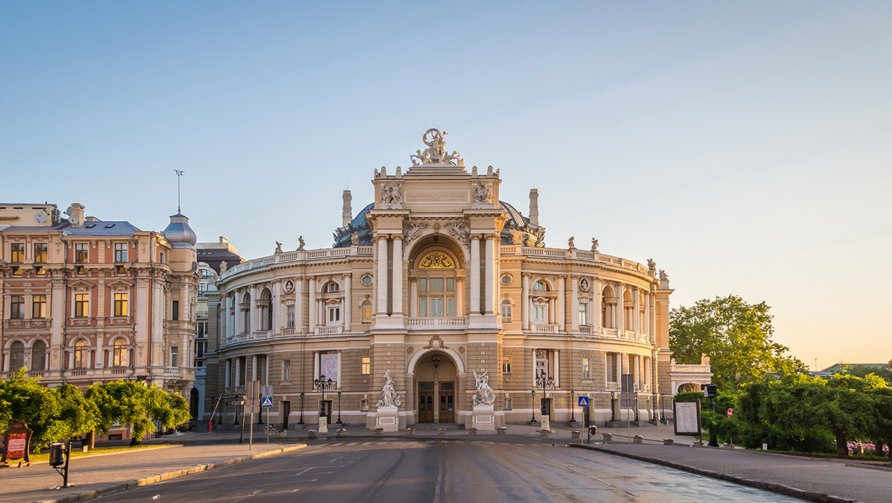

Місце народження: 29.01.2003, м. Сміла, Черкаська область
Освіта: Смілянський ліцей "Лідер" Асоційована школа Юнеско
Оде́са — місто в Україні, Одеська область, Одеський район. Адміністративний центр області та району. Третє найбільше місто країни після Києва та Харкова. Розташоване на узбережжі Чорного моря. Найбільший морський торговий порт держави. Культурно-освітній, туристичний, торговий, транспортний центр. Складова Одеської міської територіальної громади. Населення — 1 010 537 осіб (2022).
Перші поселення на території Одеси засновані близько VII століття до н. е. — III століття н. е. давньогрецькими колоністами. У ХІІІ ст. цю місцевість заселила Ногайська орда, яка через якийсь час влилася до Золотої орди. Біля 1341 року узбережжя захопило Велике князівство Литовське, яке заклало тут фортецю Коцюбіїв. У XV ст. вона перейшла до складу Османської імперії і була перейменована на Хаджибей. 1789 року фортецю завоювала Російська імперія, яка перейменувала її на Одесу і надала статус міста. У 1819—1859 роках тут діяв торговий режим порто-франко, який сприяв стрімкому економічному розвитку. В ході українсько-радянських воєн місто входило до складу УНР, Української держави, більшовицьких і білих сил. 1920 року стало частиною УРСР. Під час Другої світової війни, у 1941—1944 роках, перебувало під окупацією Румунії. Від 1991 року — у складі незалежної України.
